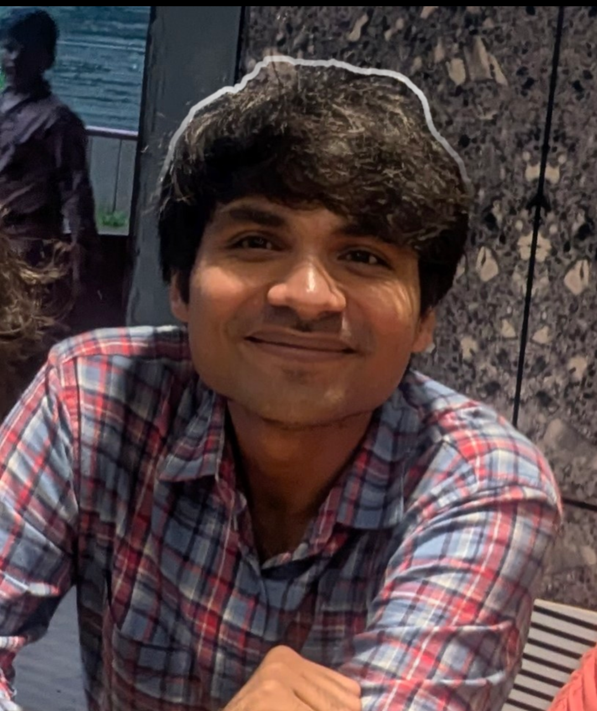

Winter 2025
Teaching Assistant — Pattern Recognition and Machine Learning
IIT Jodhpur · Instructor: Dr. Anand Mishra
Ph.D. Student in Artificial Intelligence at IIT Jodhpur

I am a Ph.D. student in Artificial Intelligence at the Indian Institute of Technology Jodhpur, advised by Prof. Richa Singh and Prof. Mayank Vatsa. I am a member of the Image Analysis and Biometrics Lab.
My research focuses on machine unlearning: enabling trained models to forget selected people, classes, concepts, or attributes without retraining from scratch or degrading unrelated capabilities. I work across generative models, computer vision, speech, and biometric systems, with broader interests in privacy-preserving and trustworthy machine learning.
I am especially interested in the geometry of learned representations, efficient and verifiable unlearning, robustness against relearning, and the privacy–utility trade-offs of deployed AI systems.
My work asks how information can be selectively removed from a learned model while preserving useful knowledge. I study this problem across text-to-image generation, vision classification, speech, and biometric systems.
Genμ: The Generative Machine Unlearning Challenge
Kartik Thakral, Shreyansh Pathak, Tamar Glaser, Tal Hassner, Diego Garcia-Olano, Iacopo Masi, Richa Singh, Mayank Vatsa
IEEE/CVF International Conference on Computer Vision Workshops (ICCVW), 2025
QPAudioEraser: Quantum-Inspired Audio Unlearning for Privacy-Preserving Biometrics
Shreyansh Pathak, Sonu Shreshtha, Richa Singh, Mayank Vatsa
IEEE International Joint Conference on Biometrics (IJCB), Osaka, Japan, 2025
IIT Jodhpur · Instructor: Dr. Anand Mishra
IIT Jodhpur · Instructor: Dr. Suchetana Chakraborty
IIT Madras BS in Data Science programme
IIT Madras BS in Data Science programme
Built a project-submission web application using Flask and Vue.js, including REST APIs, validation, and workflows for students, teaching assistants, and operations teams.
Mentor with the IIT Madras BS programme and Chegg; core committee member of the IIT Madras Mathematics and Statistics Society; project intern at Verzeo.